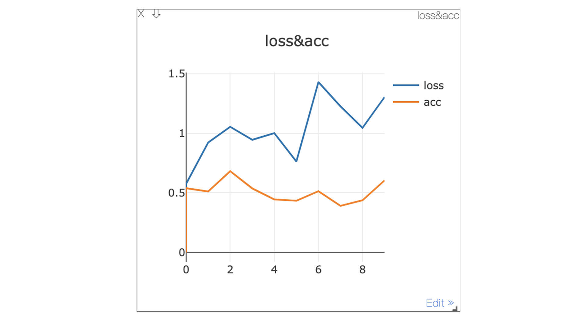

- 00 开篇词 如何高效入门PyTorch？.md.html
- 01 PyTorch：网红中的顶流明星.md.html
- 02 NumPy（上）：核心数据结构详解.md.html
- 03 NumPy（下）：深度学习中的常用操作.md.html
- 04 Tensor：PyTorch中最基础的计算单元.md.html
- 05 Tensor变形记：快速掌握Tensor切分、变形等方法.md.html
- 06 Torchvision（上）：数据读取，训练开始的第一步.md.html
- 07 Torchvision（中）：数据增强，让数据更加多样性.md.html
- 08 Torchvision（下）：其他有趣的功能.md.html
- 09 卷积（上）：如何用卷积为计算机“开天眼”？.md.html
- 10 卷积（下）：如何用卷积为计算机“开天眼”？.md.html
- 11 损失函数：如何帮助模型学会“自省”？.md.html
- 12 计算梯度：网络的前向与反向传播.md.html
- 13 优化方法：更新模型参数的方法.md.html
- 14 构建网络：一站式实现模型搭建与训练.md.html
- 15 可视化工具：如何实现训练的可视化监控？.md.html
- 16 分布式训练：如何加速你的模型训练？.md.html
- 17 图像分类（上）：图像分类原理与图像分类模型.md.html
- 18 图像分类（下）：如何构建一个图像分类模型_.md.html
- 19 图像分割（上）：详解图像分割原理与图像分割模型.md.html
- 20 图像分割（下）：如何构建一个图像分割模型？.md.html
- 21 NLP基础（上）：详解自然语言处理原理与常用算法.md.html
- 22 NLP基础（下）：详解语言模型与注意力机制.md.html
- 23 情感分析：如何使用LSTM进行情感分析？.md.html
- 24 文本分类：如何使用BERT构建文本分类模型？.md.html
- 25 摘要：如何快速实现自动文摘生成？.md.html
- 加餐 机器学习其实就那么几件事.md.html
- 用户故事 Tango：师傅领进门，修行在个人.md.html
- 答疑篇 思考题答案集锦.md.html
- 结束语 人生充满选择，选择与努力同样重要.md.html
- 捐赠
答疑篇 思考题答案集锦
你好，我是编辑宇新。春节将至，给你拜个早年。
距离我们的专栏更新结束，已经过去不少时间啦。方远老师仍然会在工作之余，回到专栏里转一转，看看同学最新的学习动态。大部分的疑问，老师都在留言区里做了回复。
除了紧跟更新的第一批同学，也很开心看到有更多新朋友加入到这个专栏的学习中。课程的思考题，为了给你留足思考和研究的时间，我们选择用加餐的方式，把所有参考答案一次性发布出来。
这里要提醒一下，建议你先自己思考和练习后，再来对答案。每节课都有超链接，方便你跳转回顾。
第2节课
题目：在刚才用户对游戏评分的那个问题中，你能计算一下每位用户对三款游戏打分的平均分吗？
答案：
>>>interest_score.mean(axis=1)
第3节课
题目：给定数组scores，形状为（256，256，2），scores[: , :, 0] 与scores[:, :, 1]对应位置元素的和为1，现在我们要根据scores生产数组mask，要求scores通道0的值如果大于通道1的值，则mask对应的位置为0，否则为1。
scores如下，你可以试试用代码实现：
scores = np.random.rand(256, 256, 2)
scores[:,:,1] = 1 - scores[:,:,0]
答案：
mask = np.argmax(scores, axis=2)
第4节课
题目：在PyTorch中，有torch.Tensor()和torch.tensor()两种函数，它们的区别是什么呢？
答案：torch.Tensor()是Pytorch中的类，其实它是torch.FloatTensor()的别名，使用torch.Tensor()会调用Tensor类的构造函数，生成float类型的张量；
而torch.tensor()是Pytorch的函数，函数原型是torch.tensor(data, dtype…)，其中data可以是scalar，list，tuple等不同的数据结构形式。
第5节课
题目：现在有个Tensor，如下。
>>> A=torch.tensor([[4,5,7], [3,9,8],[2,3,4]])
>>> A
tensor([[4, 5, 7],
[3, 9, 8],
[2, 3, 4]])
我们想提取出其中第一行的第一个，第二行的第一第二个，第三行的最后一个，该怎么做呢？
答案：
>>> B=torch.Tensor([[1,0,0], [1,1,0],[0,0,1]]).type(torch.ByteTensor)
>>> B
tensor([[1, 0, 0],
[1, 1, 0],
[0, 0, 1]], dtype=torch.uint8)
>>> C=torch.masked_select(A,B)
>>> C
tensor([4, 3, 9, 4])
我们只需要创建一个形状跟A一样的Tensor，然后将对应位置的数值置为1，然后再把Tensor转换成torch.ByteTensor类型得到B，最后跟之前masked_select一样的操作就OK啦。
第6节课
题目：在PyTorch中，我们要定义一个数据集，应该继承哪一个类呢？
答案：torch.utils.data.Dataset
第7节课
题目：Torchvision中 transforms 模块的作用是什么？
答案：常用的图像操作，例如随机切割、旋转、Tensor 与 Numpy 和 PIL Image 的数据类型转换等。
第8节课
题目：请你使用torchvision.models模块实例化一个VGG 16网络。
答案：
import torchvision.models as models
vgg16 = models.vgg16(pretrained=True)
第9节课
题目：请你想一想，padding为’same’时，stride可以为1以外的数值吗？
答案：不可以。
第10节课
题目：随机生成一个3通道的128x128的特征图，然后创建一个有10个卷积核且卷积核尺寸为3x3（DW卷积）的深度可分离卷积，对输入数据进行卷积计算。
答案：
import torch
import torch.nn as nn
# 生成一个三通道的128x128特征图
x = torch.rand((3, 128, 128)).unsqueeze(0)
# DW卷积groups参数与输入通道数一样
dw = nn.Conv2d(x.shape[1], x.shape[1], 3, 1, groups=x.shape[1])
pw = nn.Conv2d(x.shape[1], 10, 1, 1)
out = pw(dw(x))
print(out.shape)
第11节课
题目：损失函数的值越小越好么？
答案：不是的，咱们在这节课中学习的损失函数，实际上是模型在训练数据上的平均损失，这种损失函数我们称作为经验风险。实际上，还有一个方面也是我们在实际工作中需要考虑的，那就是模型的复杂度：一味追求经验风险的最小化，很容易使得模型过拟合（可回顾一下前文内容）。
所以，还需要对模型的复杂度进行约束，我们称之为结构风险。实际研发场景中，最终的损失函数是由经验风险和结构风险共同组成的，我们要求的是两者之和的最小化。
第12节课
题目：深度学习都是基于反向传播的么？
答案：不是的，主流的深度学习模型是基于反向传播和梯度下降的，但是一些非梯度下降的二阶优化算法也是存在的，比如拟牛顿法等。不过计算代价非常大，用的就比较少了。而且一般而言，工业界基本都采用基于反向传播和梯度下降的方式。
第13节课
题目：batch size越大越好吗？
答案：不是的。较大的batch_size容易使模型收敛在局部最优点，特别小则容易受噪声影响。
第14节课
题目：请你自己构建一个卷积神经网络，基于CIFAR-10，训练一个图像分类模型。因为还没有学习图像分类原理，所以我先帮你写好了网络的结构，需要你补全数据读取、损失函数(交叉熵损失)与优化方法（SGD）等部分。
class MyCNN(nn.Module):
def __init__(self):
super().__init__()
self.conv1 = nn.Conv2d(3, 16, kernel_size=3)
# conv1输出的特征图为222x222大小
self.fc = nn.Linear(16 * 222 * 222, 10)
def forward(self, input):
x = self.conv1(input)
# 进去全连接层之前，先将特征图铺平
x = x.view(x.shape[0], -1)
x = self.fc(x)
return x
答案：
import torch
import torch.nn as nn
import torchvision
import torchvision.transforms as transforms
from torch.utils.data import DataLoader
transform = transforms.Compose([
transforms.RandomResizedCrop((224,224)),
transforms.ToTensor(),
transforms.Normalize(mean=[0.485, 0.456, 0.406], std=[0.229, 0.224, 0.225])
])
cifar10_dataset = torchvision.datasets.CIFAR10(root='./data',
train=False,
transform=transform,
target_transform=None,
download=True)
dataloader = DataLoader(dataset=cifar10_dataset, # 传入的数据集, 必须参数
batch_size=32, # 输出的batch大小
shuffle=True, # 数据是否打乱
num_workers=2) # 进程数, 0表示只有主进程
class MyCNN(nn.Module):
def __init__(self):
super().__init__()
self.conv1 = nn.Conv2d(3, 16, kernel_size=3)
# conv1输出的特征图为222x222大小
self.fc = nn.Linear(16 * 222 * 222, 10)
def forward(self, input):
x = self.conv1(input)
# 进去全连接层之前，先将特征图铺平
x = x.view(x.shape[0], -1)
x = self.fc(x)
return x
cnn = MyCNN()
optimizer = torch.optim.SGD(cnn.parameters(), lr=1e-5, weight_decay=1e-2, momentum=0.9)
# 训练3个Epoch
for epoch in range(3):
for step, (images, target) in enumerate(dataloader):
output = cnn(images)
loss = nn.CrossEntropyLoss()(output, target)
print('Epoch: {} Step: {} Loss: {}'.format(epoch + 1 , step, loss))
cnn.zero_grad()
loss.backward()
optimizer.step()
第15节课
题目：参考Visdom快速上手中的例子，现在需要生成两组随机数，分别表示Loss和Accuracy。在迭代的过程中，如何用代码同时绘制出Loss和Accuracy两组数据呢？
答案：
from visdom import Visdom
import numpy as np
import time
# 实例化窗口
viz = Visdom(port=6006)
# 初始化窗口参数
viz.line([[0.,0.]], [0.],
win='train',
opts=dict(title='loss&acc', legend=['loss','acc'])
)
for step in range(10):
loss = 0.2 * np.random.randn() + 1
acc = 0.1 * np.random.randn() + 0.5
# 更新窗口数据
viz.line([[loss, acc]], [step], win='train', update='append')
time.sleep(0.5)
运行结果如图所示：

第16节课
题目：在torch.distributed.init_process_group(backend=“nccl”)函数中，backend参数可选哪些后端，它们分别有什么区别？
答案：backend参数指定的通信后端，包括NCCL、MPI、gloo。NCCL是Nvidia提供的官方多卡通信框架，相对比较高效；MPI也是高性能计算常用的通信协议，但是需要自己安装MPI实现框架，例如OpenMPI；gloo是内置通信后端，但不够高效。
第18节课
题目：老板希望你的模型能尽可能的把线上所有极客时间的海报都找到，允许一些误召回。训练模型的时候你应该侧重精确率还是召回率？
答案：侧重召回率。
第19节课
题目：对于这节课里讲的小猫分割问题，最终只输出1个特征图是否可以？
答案：可以的，因为小猫分割是一个二分类问题，可以将输出的特征图使用sigmoid函数将输出的数值转换为一个概率，从而进行判断。
第20节课
题目：图像分割的评价指标都有什么？
答案：mIoU和Dice系数。
第21节课
题目：TF-IDF有哪些缺点呢？你不妨结合它的计算过程做个梳理。
答案：TF-IDF认为文本频率小的单词就越重要，也就是区分性越强，但是实际上很多情况下，这并不正确。比如一篇财经类文章有一句“股价就跟火箭一样上了天”，这里的“火箭”就会变得非常重要，显然是错误的。怎么办呢？一般我们会对词频做一个条件过滤，比如超过多少次。也会对TF-IDF的公式进行改进，具体改进方法，如果有兴趣的话，你可以借助网络查找相应的文章。
第22节课
题目：词向量的长度多少比较合适呢？越长越好吗？
答案：不是的，越长的词向量尽管可以更加精细的表示词语的空间位置，但是也会带来计算量的暴涨、数据稀疏等问题，一般来说我们较多的选择64、128、256这样的长度，具体是多少，要靠实验来不断的确定。有的论文给出的建议是n>8.33logN，具体是否可行，还是要结合实际情况来敲定。
第23节课
题目：利用今天训练的模型，编写一个函数predict_sentiment，实现输入一句话，输出这句话的情绪类别与概率。
例如：
text = "This film is terrible!"
predict_sentiment(text, model, tokenizer, vocab, device)
'''
输出：('neg', 0.8874172568321228)
'''
答案：参考代码如下。
# 预测过程
def predict_sentiment(text, model, tokenizer, vocab, device):
tokens = tokenizer(text)
ids = [vocab[t] for t in tokens]
length = torch.LongTensor([len(ids)])
tensor = torch.LongTensor(ids).unsqueeze(dim=0).to(device)
prediction = model(tensor, length).squeeze(dim=0)
probability = torch.softmax(prediction, dim=-1)
predicted_class = prediction.argmax(dim=-1).item()
predicted_probability = probability[predicted_class].item()
predicted_class = 'neg' if predicted_class == 0 else 'pos'
return predicted_class, predicted_probability
# 加载模型
model.load_state_dict(torch.load('lstm.pt'))
text = "This film is terrible!"
predict_sentiment(text, model, tokenizer, vocab, device)
第24节课
题目：Bert处理文本是有最大长度要求的（512），那么遇到长文本，该怎么办呢？
答案：这是一个非常开放的问题，设置为最大512主要还是兼顾了效率问题，但还是有非常多的解决办法，比如我们之前提到过的关键词提取。或者分别从开头、中间、结尾选择一定长度的内容做运算。不过这些都是比较简单的办法。你还有更好的办法吗？欢迎留言给我。
第25节课
题目：自2018年BERT被提出以来，获得了很大的成功，学术界陆续提出了各类相关模型，例如我们今天学习的BART。请你查一查还有哪些BERT系列的模型，并阅读相关论文，自行学习一下它们的原理与特点。
答案：
XLNet: Generalized Autoregressive Pretraining for Language Understanding
RoBERTa: A Robustly Optimized BERT Pretraining Approach
ALBERT: A Lite BERT for Self-supervised Learning of Language Representations
最后，再次祝愿你虎年快乐，学习进步，工作顺利！
© 2019 - 2023 Liangliang Lee. Powered by gin and hexo-theme-book.